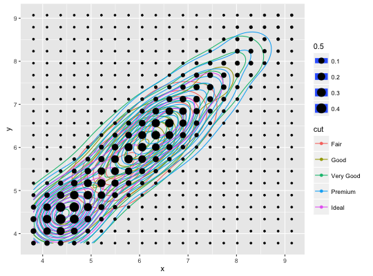

geom_density2d(mapping = NULL, data = NULL, stat = "density2d", position = "identity", lineend = "butt", linejoin = "round", linemitre = 1, na.rm = FALSE, show.legend = NA, inherit.aes = TRUE, ...)stat_density2d(mapping = NULL, data = NULL, geom = "density2d", position = "identity", na.rm = FALSE, contour = TRUE, n = 100, h = NULL, show.legend = NA, inherit.aes = TRUE, ...)
aes or
aes_. If specified and inherit.aes = TRUE (the
default), is combined with the default mapping at the top level of the
plot. You only need to supply mapping if there isn't a mapping
defined for the plot.FALSE (the default), removes missing values with
a warning. If TRUE silently removes missing values.NA, the default, includes if any aesthetics are mapped.
FALSE never includes, and TRUE always includes.FALSE, overrides the default aesthetics,
rather than combining with them. This is most useful for helper functions
that define both data and aesthetics and shouldn't inherit behaviour from
the default plot specification, e.g. borders.layer. There are
three types of arguments you can use here:
color = "red" or size = 3.
stat associated with the layer.
geom_density2d and stat_density2d.TRUE, contour the results of the 2d density
estimationNULL, estimated
using bandwidth.nrd.Perform a 2D kernel density estimation using kde2d and display the results with contours. This can be useful for dealing with overplotting.
geom_density2d understands the following aesthetics (required aesthetics are in bold):
x
y
alpha
colour
linetype
size
Same as stat_contour
m <- ggplot(faithful, aes(x = eruptions, y = waiting)) + geom_point() + xlim(0.5, 6) + ylim(40, 110) m + geom_density2d()m + stat_density2d(aes(fill = ..level..), geom = "polygon")# If you map an aesthetic to a categorical variable, you will get a # set of contours for each value of that variable set.seed(4393) dsmall <- diamonds[sample(nrow(diamonds), 1000), ] d <- ggplot(dsmall, aes(x, y)) + geom_density2d(aes(colour = cut)) d# If we turn contouring off, we can use use geoms like tiles: d + stat_density2d(geom = "raster", aes(fill = ..density..), contour = FALSE)# Or points: d + stat_density2d(geom = "point", aes(size = ..density..), n = 20, contour = FALSE)
geom_contour for contour drawing geom,
stat_sum for another way of dealing with overplotting